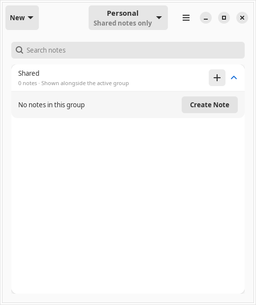
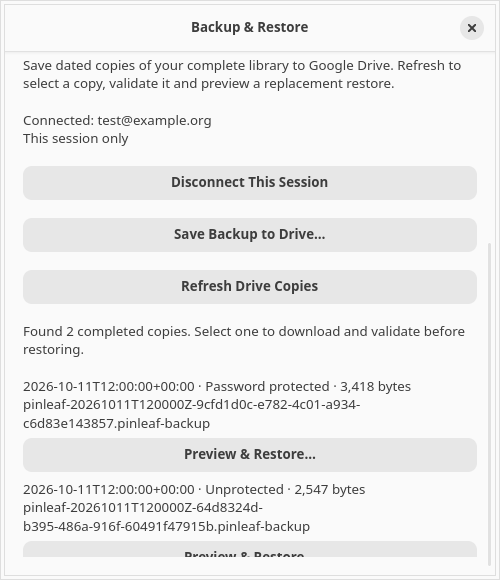

Supported platform
- Primary target: Ubuntu 24.04 LTS with GNOME or GNOME-style desktop sessions.
- Supported install path: Launchpad PPA with apt.
- Runtime stack: Python 3, GTK 4, libadwaita, PyGObject and Ayatana AppIndicator.
- Best-effort: other Debian/Ubuntu-compatible systems with the same dependencies.
- Not validated: Fedora, Arch, openSUSE, KDE, Xfce, LXQt, Flatpak, Snap, AppImage, macOS or Windows.
Desktop notes, kept local
- Independent post-it-style note windows.
- Autosave and local SQLite persistence.
- Four note colors with curated bundled and system font choices.
- Default text settings for new notes, plus per-note text appearance controls.
- Main panel with previews, local-time timestamps and struck-through hidden notes.
- Focused note action dialog from Escape for hiding or deleting notes.
- AppIndicator menu for quick create, show and quit actions.
- Ubuntu PPA and local Debian package installation with apt.
Preparing 0.9.0
Shared notes and portable backups
The 0.9.0 source adds Shared notes, a compact New menu and local or Google Drive backups. Release publication is being prepared. The latest published version is still 0.8.0 on GitHub Releases and the Ubuntu PPA. You can run the new source while publication is prepared.
- Keep Shared notes visible alongside the active project in each profile.
- Create Shared notes through its + action, or use the header's New Note / New Group menu.
- Search Shared and the active group together, or broaden the search to a profile or all profiles.
- Save and restore the complete note library locally, with optional password protection.
- Connect your own Google account to save dated Drive backups and restore them on another computer.
- Upgrade General to Shared in place with a validated recovery snapshot; hidden notes stay hidden.


Read the profiles and groups guide for Shared, activation, hidden notes, movement and deletion behavior.
Notes and desktop integration


Included in the 0.9.0 source
Optional backups, with your notes still local
Create a local copy of the complete note library, or connect Google Drive to save a dated backup and restore it on another computer. Password protection is optional. Restore validates the file, shows a preview and preserves a recovery copy before replacing the library. These features are prepared for 0.9.0 and are not in published 0.8.0.
Google Drive is used only after you connect your account and choose to save or restore a backup. Everyday note editing remains local and available offline. Read the Google Drive privacy details.
Install
Add the Pinleaf PPA on Ubuntu 24.04 and install 0.8.0 with apt:
sudo add-apt-repository ppa:robmoraes/pinleaf
sudo apt update
sudo apt install pinleafOr download the Debian package from GitHub Releases:
sudo apt install ./pinleaf_*.debBuild a local Debian package from the repository root:
sudo apt install build-essential debhelper dpkg-dev
dpkg-buildpackage -us -uc
sudo apt install ../pinleaf_*.debRun from source with Ubuntu 24.04 system dependencies:
sudo apt install \
python3-gi \
python3-jsonschema \
python3-cryptography \
python3-google-auth-oauthlib \
python3-requests \
python3-secretstorage \
gir1.2-gtk-4.0 \
gir1.2-adw-1 \
gir1.2-ayatanaappindicator3-0.1 \
libayatana-appindicator3-1git clone https://github.com/robmoraes/pinleaf.git
cd pinleaf
/usr/bin/python3 -m pinleafPinleaf stores notes locally under ~/.local/share/pinleaf. Package removal does not remove note data.
Development
Install the Ubuntu 24.04 system dependencies:
sudo apt install \
python3-gi \
python3-jsonschema \
python3-cryptography \
python3-google-auth-oauthlib \
python3-requests \
python3-secretstorage \
gir1.2-gtk-4.0 \
gir1.2-adw-1 \
gir1.2-ayatanaappindicator3-0.1 \
libayatana-appindicator3-1Clone and run:
git clone https://github.com/robmoraes/pinleaf.git
cd pinleaf
/usr/bin/python3 -m pinleafInstall a user-local desktop launcher:
scripts/install-localCurrent status
Version 0.9.0 is being prepared with Shared notes, the header New menu and local or Google Drive backups. The latest published version on GitHub and the Ubuntu PPA remains v0.8.0, with profiles, groups and scoped text search. Known limitations include best-effort window positioning and desktop-environment-specific AppIndicator behavior.
See known limitations for details.